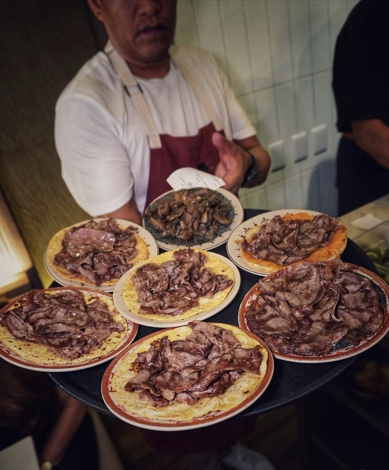

Lomas de Chapultepec · Mexico City
La Once Mil
A Michelin-starred taquería. Walk in, no reservations: first come, first served.

Visit La Once Mil
Address: Monte Everest 780, Lomas de Chapultepec, Miguel Hidalgo, CP 11000, Mexico City
Hours: Monday-Friday 12:00 PM-11:30 PM · Saturday-Sunday 11:00 AM-11:30 PM
Walk-ins only — no reservations, first come, first served.
One MICHELIN Star, awarded 2026, attributed to this address.